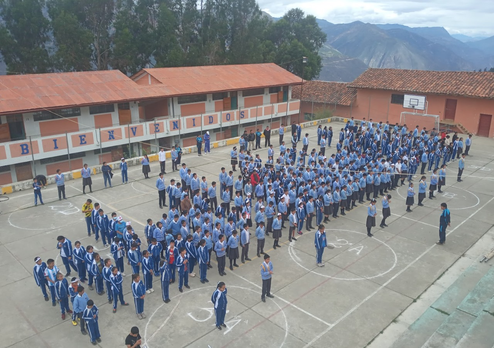

NOSOTROS

RESEÑA HISTORICA
La Institución Educativa fue creada el 22 de marzo del año 1967, como Centro Base Colegio Nacional Mixto “Santiago Antúnez de Mayolo” celebrándose su instalación escolar el 24 de abril del año 1967, inaugurándose el 15 de agosto de 1967. Fueron 52 estudiantes que iniciaron sus estudios en iniciaron sus estudios en aquella fecha en un local donado por la familia Moreno, ubicado actualmente en la Av. El Ejército cuadra tres; su primer Director fue el educador Asunción Evangelista Haro. A medida que fueron pasando los años, esta casa de estudios fue incrementando sus servicios educativos, en cuanto a los grados de estudios. Hasta que en el año 1971 egresó la primera promoción. Después asumió la dirección el Profesor Dagoberto Bernardo Cuellar, en seguida el Profesor Emer Florencio Vidal Veramendi, en cuya gestión se dio la construcción de aulas en dos pabellones, con el trabajo esforzado de los padres de familia, estudiantes y autoridades, llegando a trasladarse a su local definitivo en el año 1980. Paso a paso esta institución educativa fue adecuando la topografía del terreno donde se ubicó para el patio de honor, el campo deportivo, servicios higiénicos. En estos años se dio la publicación de siete boletines institucionales de valioso contenido cultural y pedagógico, siendo su impresión de forma artesanal utilizando el mimeógrafo. Posteriormente, retornó a la Dirección el profesor Dagoberto Bernardo Cuellar, quien a raíz de la incursión violenta de las huestes de Sendero Luminoso, que causó el fallecimiento de dos policías y un ciudadano, se trasladó a la ciudad de Huaraz, reemplazando el profesor Luis Suegiro Hinoshita, luego el profesor Vicente Rivas Espinoza, sucediéndose brevemente los profesores Evel Valverde Valenzuela, Froibel Tarazona Ortíz, Lita Vidal Espinoza, Eder Rojas Melgarejo, Elí Asencios Olivas, quien con esfuerzo mancomunado inició el mejoramiento del patio de honor y el campo deportivo, quiosco escolar. En el año 1992, esta institución educativa cumplió sus Bodas de Plata, con la presencia de los integrantes de las diferentes promociones que egresaron hasta la fecha, como también invitados. En el año 1993 retorna a la Dirección el Profesor Emer Florencio Vida Veramendi, quien permaneció hasta el año 2010. En el año 1995, ante la promesa del presidente Alberto Fujimori Fujimori para la construcción de nueva infraestructura, se gestionó la documentación pertinente, descubriéndose la desaparición del documento oficial de su creación, por lo que gestionaron la regularización de su creación, aprobándose mediante la R.D. N° 2231-1995, con fecha 08 de septiembre de 1995. Esta coyuntura impidió que se hiciera realidad tal empeño, posteriormente en los años 1997-1998 se amplió un pabellón de cinco aulas y ambientes administrativas, a cargo de la CTAR Huánuco. Posteriormente entre los años 2006 y 2008, se construyó dos pabellones, una de ellas de 08 aulas y el otro destinado al laboratorio de ciencias naturales, aula de innovación tecnológica, biblioteca y ambientes administrativos, cubriéndose de esta manera el déficit de ambientes para aquel momento. En el año 2010 asume la conducción de la institución el profesor Víctor Pimentel Espinoza, iniciándose con la implementación de un pequeño museo institucional. En el año 2011, su director fue el profesor Saúl René Tarazona Silva, gestándose la publicación de la primera revista institucional titulada “Mayolino Rikchariy” con contenido cultural y pedagógico y también la implementación de áreas verdes y jardines con la participación activa de estudiantes y educadores, para el año 2012, fue reasignado como director el profesor Arturo Beltrán Asencios, quien estuvo por el lapso de tres años a cargo de la institución. Para el año 2014 la profesora Nilda Veramendi Tarazona, asumió la conducción de la institución hasta el año 2016; en este lapso se gestionó el desdoblamiento de secciones, en vista de que se contaba con exceso de estudiantes en cada aula, con el apoyo de funcionarios de la UGEL Huacaybamba, entre ellos el profesor Grover Malpartida Villanueva, como Jefe de AGP y Especialista de Educación. En el año 2017, retorna a la dirección el profesor Saúl René Tarazona Silva, quien se esmeró en la organización de las celebraciones de las “Bodas de Oro”, continuando su gestión hasta el año 2021, en el cual se ha gestionado la publicación de el segundo número de la revista institucional “Mayolino Rikchariy”, la creación del CEBA “Santiago Antúnez de Mayolo” a fin de brindar servicio educativo a personas que no concluyeron sus estudios secundarios oportunamente y también la formulación del perfil y expediente técnico para la construcción de nuevos ambientes, al contarse con 19 secciones a la fecha y tener un déficit de seis aulas.
MISION INSTITUCIONAL
“Brindar una formación integral de calidad y excelencia académica en los campos: humanista, científico, tecnológico, ecológico, ético y moral, capaces de resolver situaciones problemáticas y de riesgo frente a la salud física y mental, con creatividad y responsabilidad, utilizando la tecnología moderna y el potencial humano, para contribuir al desarrollo de nuestra sociedad”
VISION INSTITUCIONAL
“En el 2027 la Institución Educativa “Santiago Antúnez de Mayolo”, será forjadora de una educación integral de jóvenes y ciudadanos líderes, competitivos y cooperativos con conciencia humana, ambiental e inclusiva, aptos para afrontar desafíos de la vida”
